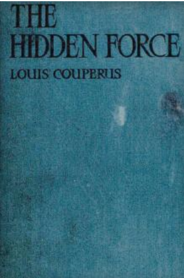
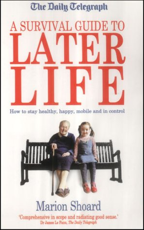
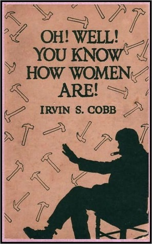
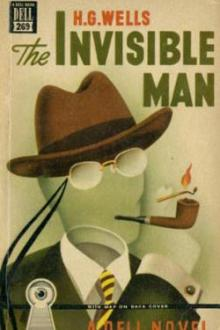
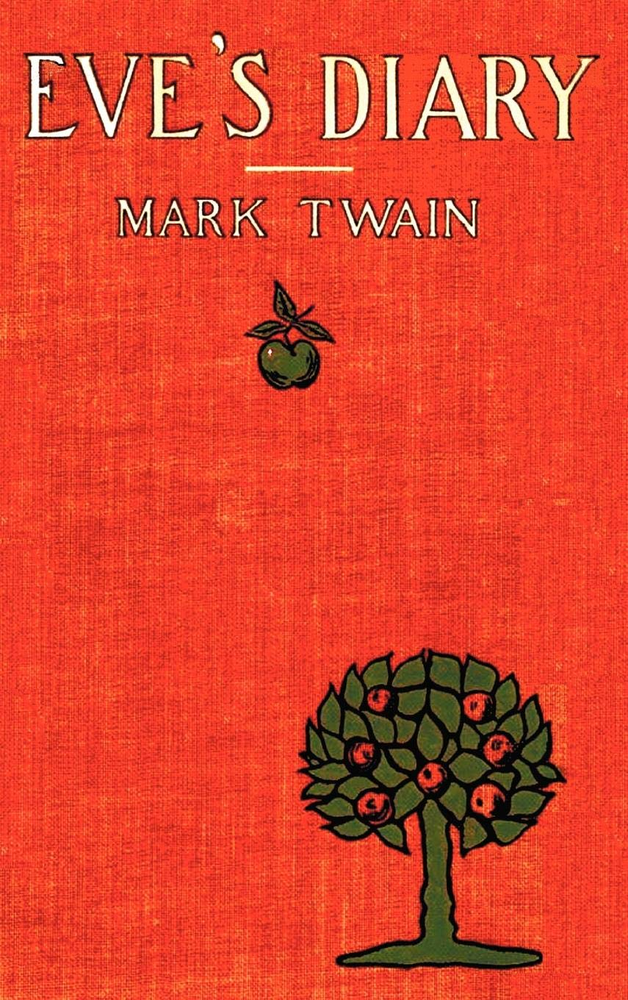
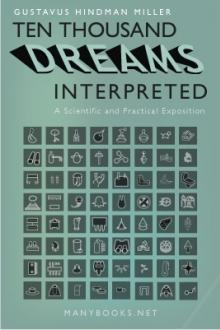

Reading gives us someplace to go, when we have to stay where we are!
Ecstasy.
- Author: Abdulhadi Al-Amshan.
- Description: Try to see life through the eyes of a person surrounded by darkness from the start. It is a series that the writer expresses through illustrations and art. It is for the people who like to allow their imagination to blast away. Ecstasy also inspires people, who don't read books, to start reading.
- Download
- 
The Hidden Force.
- Author: Louis Couperus.
- Description: The Hidden Force gives a picture of life in the Dutch East Indies in the last year of the 19th and the 1st year of the 20th century. Conditions have altered slightly since there are some minors change but the relations between the Europeans and the natives remained as they were.
- Download
- 
The Later Life.
- Author: Louis Couperus.
- Description: The Later Life is the second of The Books of the Small Souls, the novel that gives the title to the series. In the present story, Couperus reverts, at times and in a measure, to that earlier, "sensitivist" method which he abandoned almost wholly in Small Souls and in The Twilight of the Souls.
- Download
The Tour.
- Author: Louis Couperus.
- Description: It was not possible to feel always, always, the same vehement grief. To-morrow, nay, in an hour, the sorrow would resume its violence; now, in this night of coolness and melody, there was just a brief rest, a moment of annihilation, almost a sense of wistful well-being. And, in this calmer mood, Louis felt a need to speak a friendly word to his old friend and tutor, as he had not done since the voyage began.
- Download

The Time Machine.
- Author: H.G. Wells.
- Description: A brilliant fantasy beyond conventional thought. It's plain enough, . We cannot see it, nor can we appreciate this machine, any more than we can the spoke of a wheel spinning, or a bullet flying through the air.If it is travelling through time fifty times or a hundred times faster than we are, if it gets through a minute while we get through a second.We sat and stared at the vacant table. Then the Time Traveller asked us what we thought of it all.
- Download
- 
Oh! Well! You Know How Women Are!
- Author: Irvin S. Cobb.
- Description: Isn't That Just Like a Man! Managers of big city shops once lifted the rule prescribing certain modes for their female working staffs--if they should give their women clerks a free hand in choosing their own wardrobes for store hours--well, you know how women are!
- Download
How To Use Your Mind.
- Author: Harry Dexter Kitson.
- Description: Educational leaders are seeing with increasing clearness the necessity of teaching students not only the subject-matter of study but also methods of study. The recognition of this condition is taking the form of the movement toward ''supervised study,'' which attempts to acquaint the student with principles of economy and directness in using his mind.
- Download
The Frights of Fiji.
- Author: Sunayna Prasad.
- Description: A world of magic and adventure awaits… Sent to live with her strict, aloof, and uncaring uncle after her parents are killed in a car accident, twelve-year-old orphan Alyssa McCarthy longs for the life she used to have—one filled with fun and love. Then one stormy night, a message appears in the raindrops on the window that will change everything."Your life will never be the same again, as magic will interfere."
- Download
Beyond Good and Evil.
- Author: Friedrich Wilhelm Nietzsche.
- Description: ting that all philosophers, in so far as they have been dogmatists, have failed to understand women--that the terrible seriousness and clumsy importunity with which they have usually paid their addresses to Truth, have been unskilled and unseemly methods for winning a woman? Certainly she has never allowed herself to be won.
- Download

The Power of Concentration.
- Author: Theron Q. Dumont.
- Description: It is of the utmost value to learn how toconcentrate. To make the greatest success of anything you must beable to concentrate your entire thought upon the idea you areworking on. The person that is able to concentrate utilizes allconstructive thoughts and shuts out all destructive ones. Thegreatest man would accomplish nothing if he lacked concentration.
- Download
Hold That Thought.
- Author: Chana Mason.
- Description: This book is about empowerment, choice, and creating a positive life through the power of thought. it helps to understand and apply the Law of Attraction, Manifest your desires, Discover your authentic self, Become a conscious creator, Align with Universal Mind, Increase your creativity, Reduce stress, Focus your thoughts and master your mind.
- Download
The Arabian Nights.
- Author: Andrew Lang.
- Description: A medieval Middle-Eastern literary epic which tells the story of Scheherazade, a Sassanid Queen, who must relate a series of stories to her malevolent husband, the King, to delay her execution. The stories are told over a period of one thousand and one nights, and every night she ends the story with a suspenseful situation, forcing the King to keep her alive for another day.
- Download
- 
The Invisible Man.
- Author: H.G. Wells.
- Description: The Invisible Man of the title is ''Griffin'', a scientist who theorizes that if a person's refractive index is changed to exactly that of air and his body does not absorb or reflect light, then he will not be visible. He successfully carries out this procedure on himself, but begins to become mentally unstable as a result.
- Download
The Demon Girl.
- Author: Penelope Fletcher.
- Description: Rae Wilder has problems. Plunged into a world of dark magic, fierce creatures and ritual sacrifice, she is charged with a guarding a magical amulet. Rae finds herself beaten up, repeatedly, and forced to make a choice: to live and die human, or embrace her birth-right and wield magics that could turn her into something wicked, a force of nature nothing can control.
- Download
The War Of The Worlds.
- Author: H.G. Wells.
- Description: The War of the Worlds describes the fictional 1895 invasion of Earth by aliens from Mars who use laser-like Heat-Rays, chemical weapons, and mechanical three-legged ''fighting machines'' that could potentially be viewed as precursors to the tank. After defeating the resistance the Martians devastate much of eastern England.
- Download

The Diary Of A Young Girl.
- Author: Anne Frank.
- Description: The Diary of A Young Girl, is a book of the writings from the Dutch language. The diary kept by Anne Frank while she was in hiding for two years with her family during the Nazi occupation of the Netherlands.
- Download
- 
Eve's Diary.
- Author: Mark Twain.
- Description: A comic short story written in the style of a diary kept by the first woman, Eve.
- Download
- 
10,000 Dreams.
- Author: Gustavus Hindman Miller.
- Description: Freud would roll over on his couch if he had what we have: a reprint of 10,000 Dreams Interpreted. It's simple. All you do is look up what you dreamed about last night, and Miller has the answer.
- Download